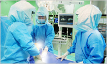
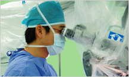
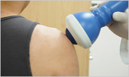
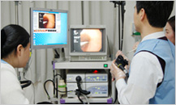
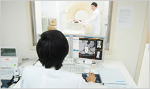
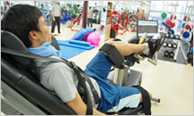

诊疗与指南大家好！向来访不老医院的所有顾客表示衷心的感谢。
- 专业化关节中心
- 
人工关节中心，关节内窥镜中心
软骨保存中心，前后十字韧带中心
肩轴中心，足部中心
手部中心
- 专业化脊椎中心
- 
脊椎非手术治疗中心
脊椎手术治疗中心
脊椎侧凸治疗中心
- 特殊非手术中心
- 
关节非手术中心
脊椎非手术中心
- 内科中心
- 
消化系统诊疗
循环系统诊疗
心脏诊疗
- 麻醉疼痛医学科
-
疼痛诊疗
手术后疼痛护理
- 影像医学科
- 
MRI, CT, ultrasonography
超声波诊断
骨密度测定
红外线体温诊断检查
- 综合体检中心
-
综合体检, 精密体检
保健体检, 健康保险工业区诊断
采用体检, 学生体检
- JDI运动康复中心
- 
关节炎/腰痛治疗
运动损伤后功能改善与功能提升
增强体力，体重及体型管理
成人病护理